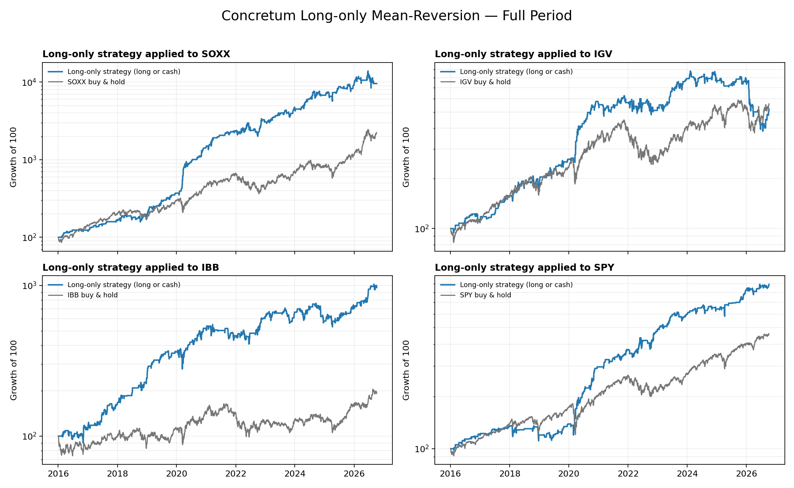
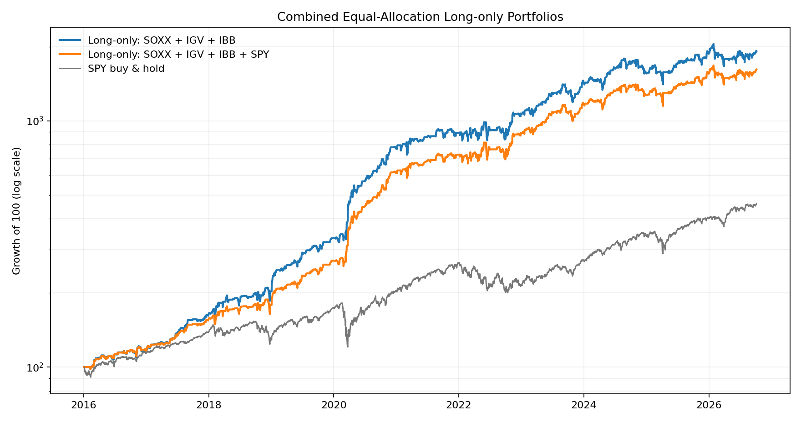
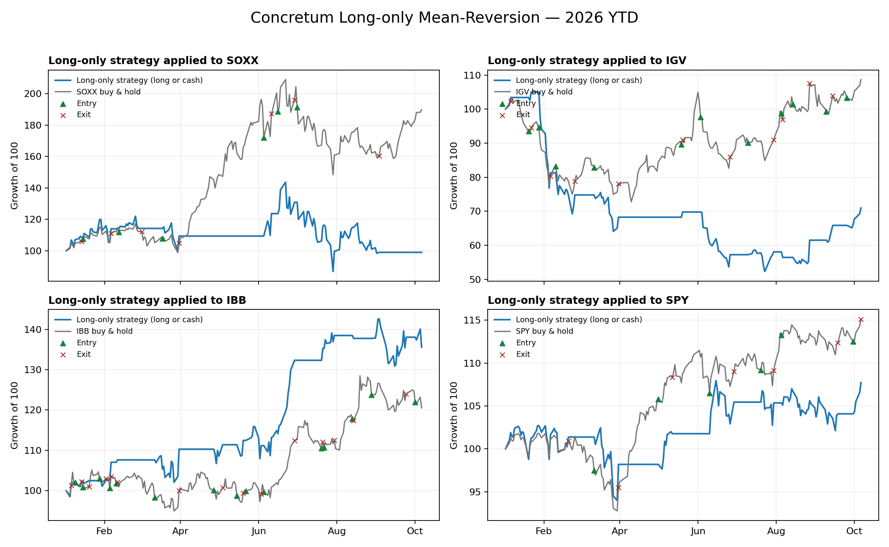
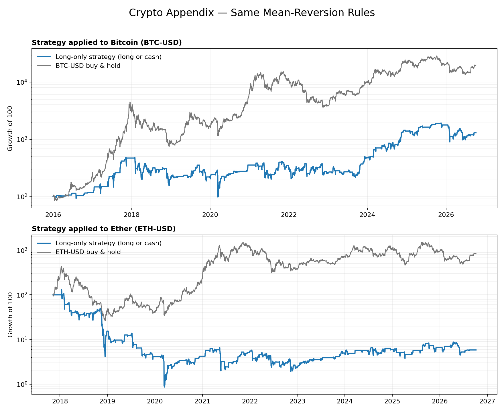
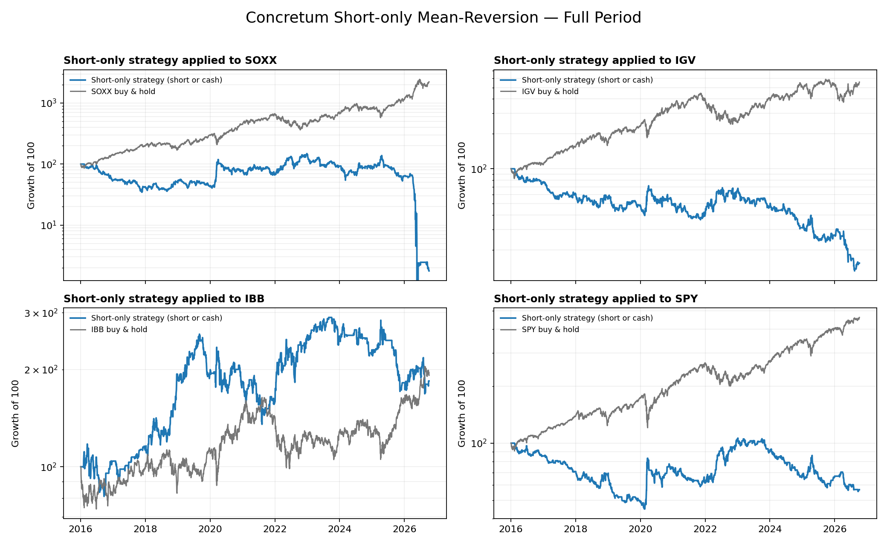
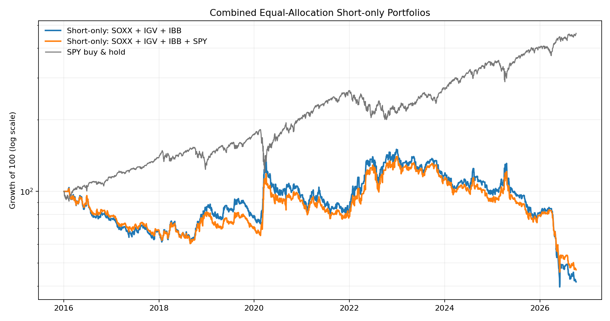

Sector Mean Reversion
Concretum rules using Yahoo daily data
Backtest: 4 January 2016 to 6 October 2026
Key takeaways
- The long-only strategy was profitable on SOXX, IGV, IBB and SPY over the test period.
- The SOXX, IGV and IBB portfolio produced a 31.62% CAGR, a 1.43 Sharpe ratio and a -21.52% maximum drawdown.
- Adding SPY reduced CAGR to 29.53%, but improved the Sharpe ratio to 1.48 and reduced maximum drawdown to -18.34%.
- The symmetric short-only strategy lost money. The long and short signals are not economically symmetric.
- The same rules worked on Bitcoin but failed on Ether. The result is not robust across crypto assets.
Long-only results by ETF

Combined portfolios

2026 trades

Rules
- Calculate IBS: (Close - Low) / (High - Low).
- Calculate today's range: ln(High / Low).
- Calculate relative range: today's range divided by the standard deviation of the previous 21 daily ranges.
- Buy at the close when IBS is below 0.10 and relative range is above 1.
- Sell the entire position at the close when IBS is above 0.90 and relative range is above 1.
- Position size at entry: 1.5 times the previous day's portfolio value, divided by the number of ETFs.
- Do not rebalance while a position is open. Keep the same number of shares until the sell signal.
- Transaction costs: subtract $0.0035 for every share bought and $0.0070 for every share sold. All reported returns are after these costs.
Current signal
| ETF | Open | High | Low | Close | IBS | Direction | Relative range | Long action |
|---|---|---|---|---|---|---|---|---|
| SOXX | 593.54 | 596.39 | 590.90 | 594.47 | 0.650 | -0.301 | 1.20 | Stay in cash |
| IGV | 110.75 | 112.34 | 110.65 | 111.49 | 0.497 | 0.006 | 2.67 | Keep long position |
| IBB | 209.35 | 210.24 | 201.48 | 203.50 | 0.231 | 0.538 | 8.26 | Keep long position |
| SPY | 778.15 | 780.67 | 777.96 | 780.47 | 0.926 | -0.852 | 1.19 | Stay in cash |
Direction equals 1 - 2 x IBS. A value near +1 is bullish for this contrarian strategy. A value near -1 is bearish. A trade occurs only when relative range is above 1.
Performance
| Portfolio | CAGR | Sharpe | Maximum drawdown | Average exposure | Total transaction costs |
|---|---|---|---|---|---|
| Long: SOXX, IGV, IBB | 31.62% | 1.43 | -21.52% | 54.37% | $21,419.78 |
| Long: SOXX, IGV, IBB, SPY | 29.53% | 1.48 | -18.34% | 53.40% | $14,326.38 |
Trading activity
| Strategy | Completed trades | Completed trades/year | Trading days in position |
|---|---|---|---|
| SOXX | 194 | 18.04 | 33.9% |
| IGV | 159 | 14.79 | 32.1% |
| IBB | 162 | 15.07 | 43.0% |
| SPY | 150 | 13.95 | 33.7% |
| Combined: SOXX, IGV, IBB | 515 | 47.89 | 61.9% |
| Combined: SOXX, IGV, IBB, SPY | 665 | 61.84 | 66.3% |
A completed trade is one buy followed by one sell. For a combined portfolio, trades are counted across all ETFs. Time in position is the percentage of trading days with at least one open position.
Appendix: Bitcoin and Ether
The same long-only IBS and relative-range rules are applied to Yahoo's BTC-USD and ETH-USD daily bars. Crypto trades seven days a week and is not included in the ETF portfolios.

| Asset | Start | CAGR | Sharpe | Maximum drawdown |
|---|---|---|---|---|
| Bitcoin (BTC-USD) | 1 Jan 2016 | 26.88% | 0.70 | -79.83% |
| Ether (ETH-USD) | 9 Nov 2017 | -27.34% | 0.20 | -99.35% |
Crypto Sharpe ratios use 365.25 observations per year. The same per-unit transaction charges are applied. Exchange fees, spread, slippage and custody costs are not included.
Appendix: short-only test
The short-only test reverses the signals. It shorts when IBS is above 0.90 and covers when IBS is below 0.10. Relative range must be above 1 for both actions.


Yahoo adjusted daily OHLC replaces the paper's 15:45 intraday snapshot because Yahoo does not provide ten years of 15-minute history. This difference prevents an exact replication. The backtest allows fractional shares, pays no interest on cash and charges no financing cost for leverage.